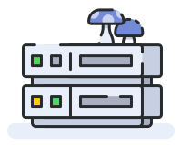

Faça sua comunidade no Discord
O StreamKit do Discord permite que você melhore sua comunidade com as ferramentas que já conhece. Faça seu servidor Discord, adicione uns bots do barulho e promova sua comunidade!

Montagem
Uma sugestão nossa de como montar sua comunidade no servidor.
Adicione alguns bots
Robôs poderosos que com certeza não querem dominar o mundo. Confira alguns bots.